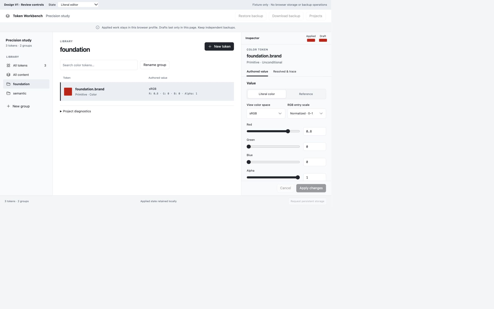
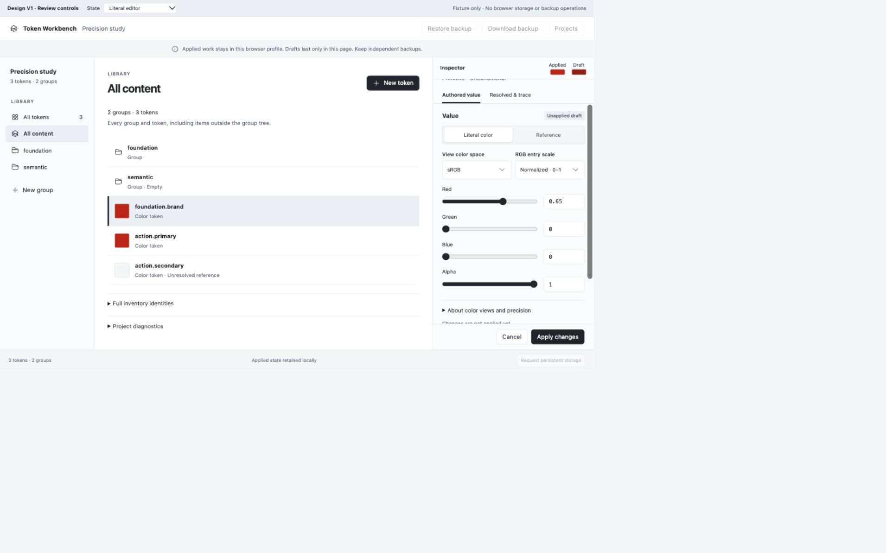
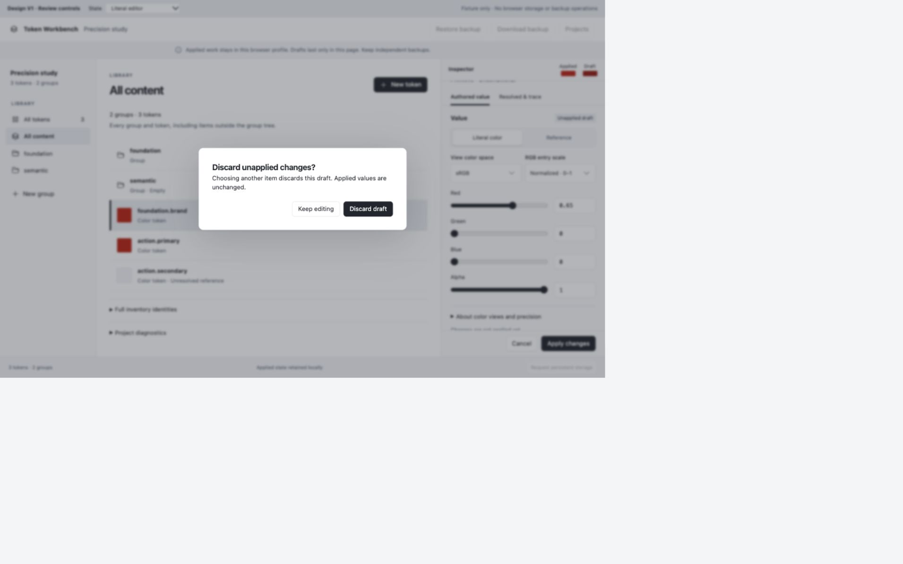
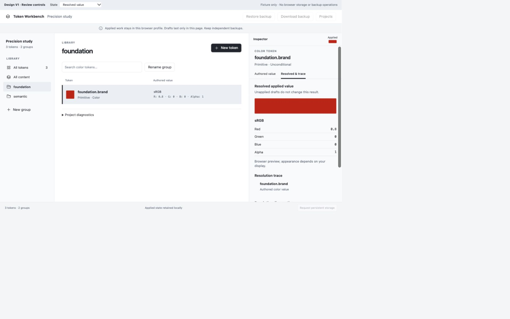
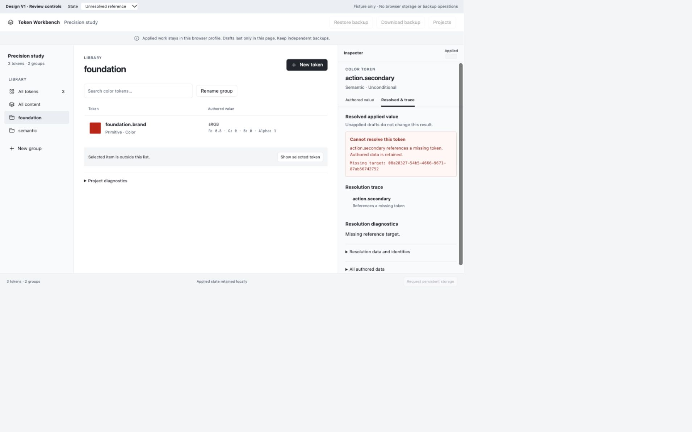
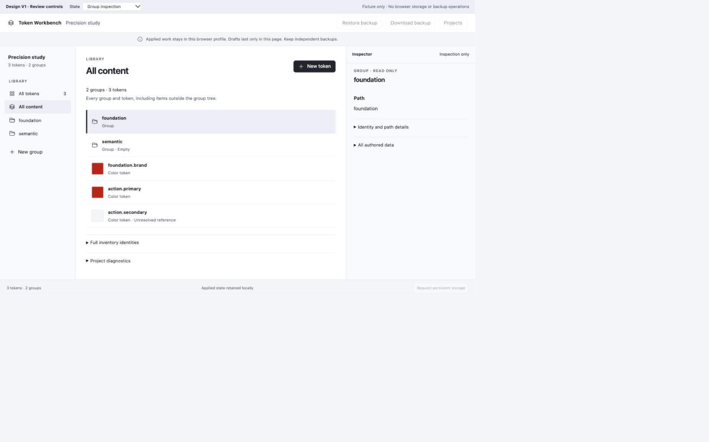
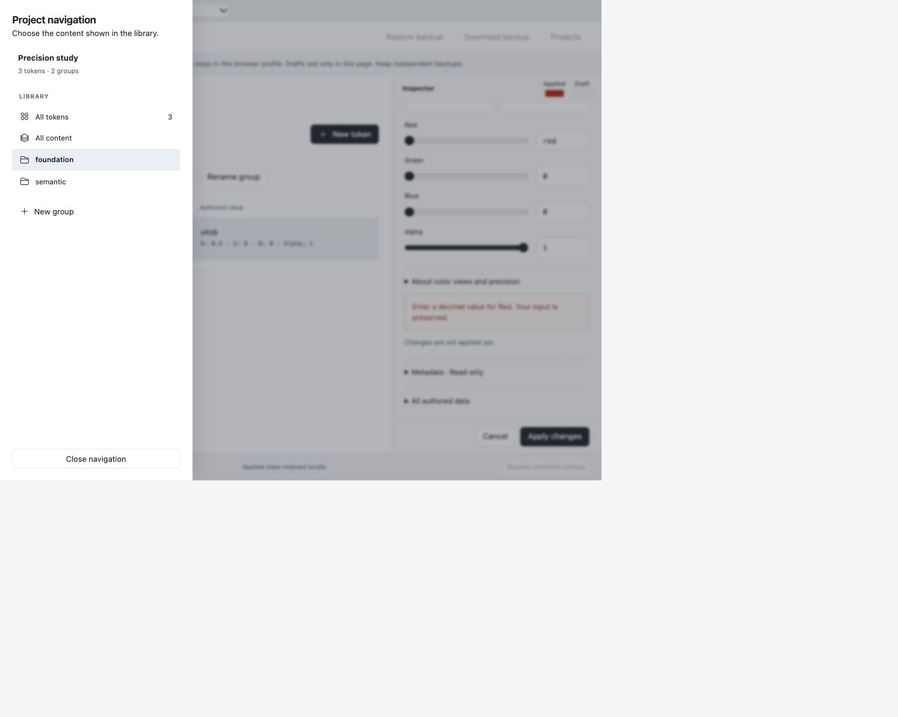
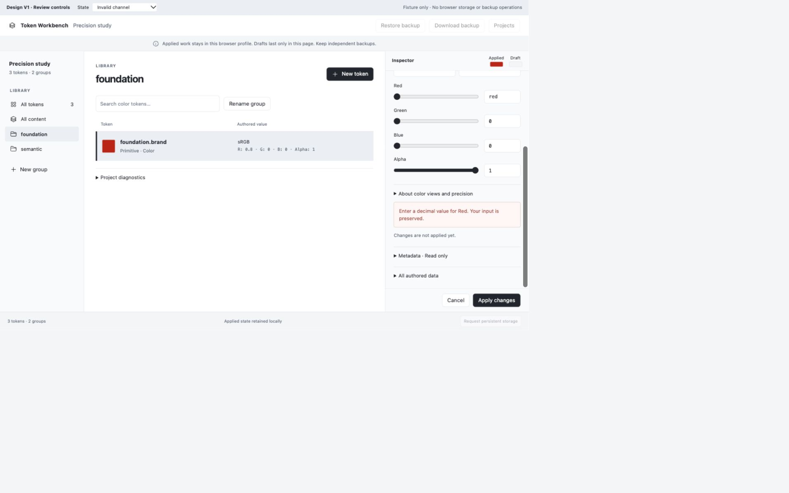
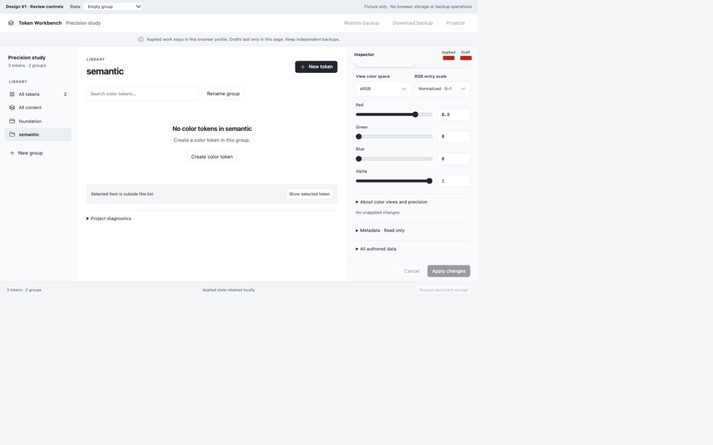

Fixture-only presentation; no application implementation or analyst review. Desktop captures use a measured CSS viewport of 1280 × 800; the compact drawer uses 1000 × 800. Review controls are outside product chrome.
The browser capture includes unused outer canvas caused by browser zoom. Gallery viewports crop that canvas for reading; links retain each original PNG.1. Literal editor 1280 × 800 CSS viewport; Alpha remains in the ordinary form with persistent Apply/Cancel. Original screenshot

2. All content with a draft All content is solely active, with no search or rename; Red 0.65 remains unapplied after changing browser view. Original screenshot

3. Different-selection guard The existing choice to keep editing or discard a draft remains explicit. Original screenshot

4. Resolved value Readable exact fixture channels and trace lead; diagnostics and raw data remain accessible below. Original screenshot

5. Unresolved reference Missing-target outcome stays explicit; full missing identity is visible. Original screenshot

6. Group inspection Readable path leads; full identity/path/source details remain disclosed. Original screenshot

7. Compact navigation 1000 × 800 CSS viewport; left-edge drawer retains a single active view. Original screenshot

8. Invalid input Malformed Red text is preserved; the error is visible after scrolling the inspector. RGB out-of-range values are not rejected by the fixture. Original screenshot

9. Empty group Guidance refers to creating in the current group. The preview creation form defaulted to semantic. Original screenshot

10. Reference editor Whole-color reference wording with applied/draft context and technical details available. Original screenshot